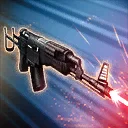

Vel Sartha
A strategic Rebel operative who disrupts enemies and strengthens allies
A strategic Rebel operative who disrupts enemies and strengthens allies

Deal Physical damage to target enemy and inflict Offense Down for 1 turn. If the target is Undermined, this Offense Down can't be dispelled. Vel gains a stack of Resilient Defense and an additional stack per Undermined enemy for 2 turns (max 8 stacks).
On her turn, if all enemies are Undermined, Rebel Fighter allies gain Protection Up (50%) for 1 turn and Vel gains Deflective Ward for 1 turn or until she receives damage.
Deal Physical damage to all enemies and Blind them for 1 turn. Blind can't be resisted by Undermined enemies. Rebel Fighter allies gain Entrenched for 1 turn, which can't be copied, dispelled, or prevented.
If all enemies are Undermined, Rebel Fighter allies gain Critical Chance Up and Critical Damage Up for 2 turns.
Entrenched: +50% Defense; deal 25% more damage for each other Entrenched ally when attacking; recover 5% Health and Protection at the start of their turn
At the start of the encounter, if all allies are Rebel Fighters, Vel gains a stack of Resilient Defense and 2 additional stacks if Cinta is an ally.
At the start of her turn, Rebel Fighter allies gain 8% of Vel's Critical Chance, Critical Damage, Defense Penetration, and Offense for 1 turn. Vel gains 50% Offense per Undermined enemy until the start of her next turn.
While Vel has Resilient Defense, she has +100% Critical Avoidance, Counter Chance, and Defense. Undermined enemies deal 10% less damage.
Omicron Boost : While in Territory Battles: All Rebel Fighter allies gain 100% Max Health, Offense and Max Protection until the end of battle. Whenever Vel gains a stack of Resilient Defense, all Rebel Fighter allies gain 50% Offense (stacking) until the start of Vel's next turn. Whenever a Rebel Fighter ally defeats an enemy, all Rebel Fighter allies recover 25% Health and Protection and gain Damage Immunity for 1 turn, which can't be copied, dispelled, or prevented. Whenever a Rebel Fighter ally defeats an Undermined enemy, all other enemies become Undermined for 1 turn, which can't be resisted.
At the start of the encounter, Vel has +35% Accuracy. Whenever Cinta or Vel are attacked by an Undermined enemy, Vel gains a stack of Resilient Defense (max 8 stacks) for 2 turns.
Whenever an Undermined enemy attacks Cinta, she recovers 10% Protection and Vel gains 10% Turn Meter. Whenever Vel uses a Basic ability on an Undermined enemy, Cinta assists.
Whenever an enemy attacks Cinta, at the start of Vel's turn that enemy is Exposed until the end of the turn. The first time Vel falls below 50% Health, she and Cinta reset their cooldowns and equalize their Health and Protection.